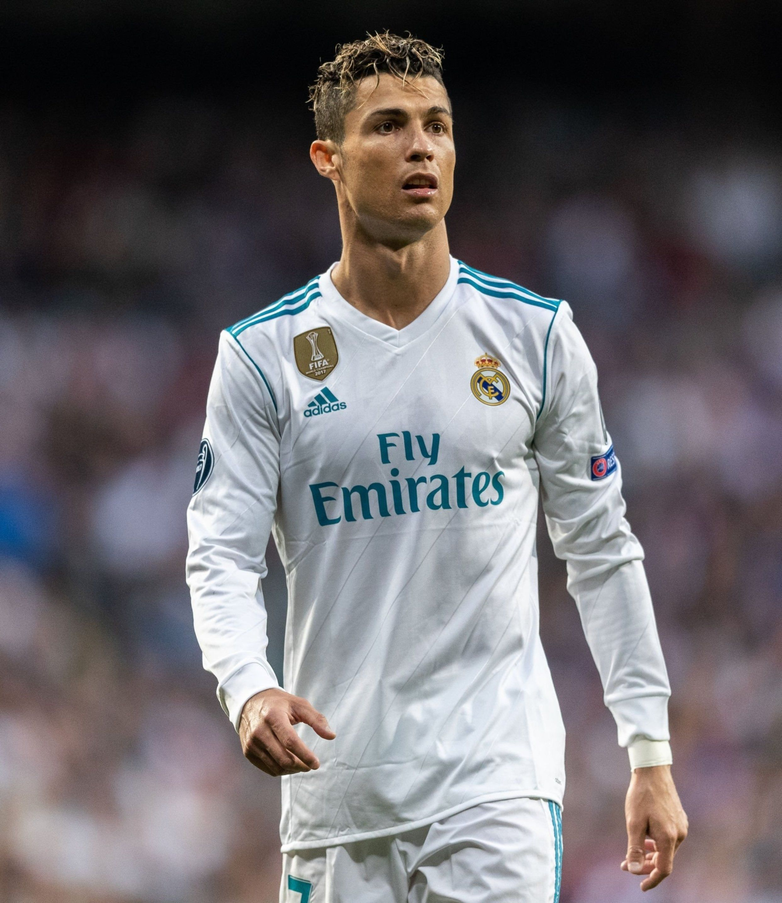
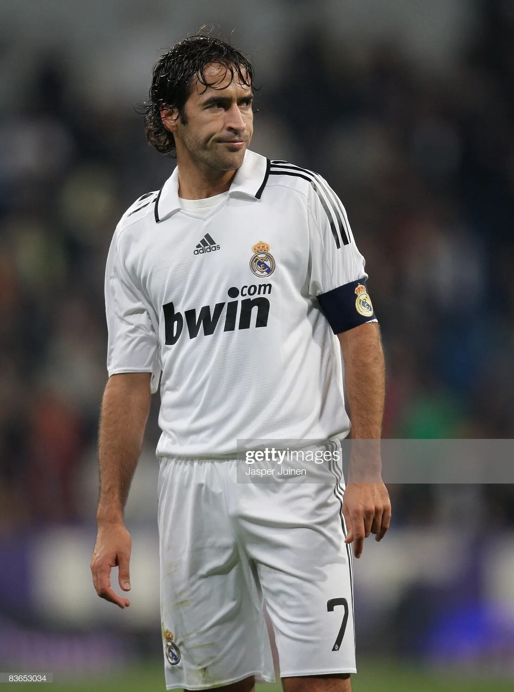
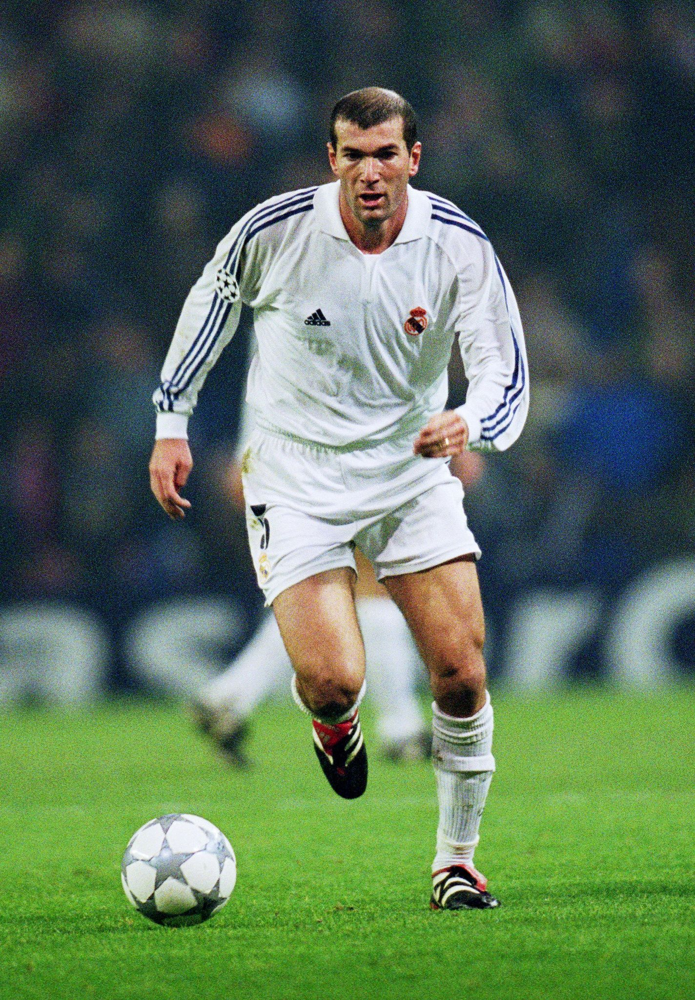

About Real Madrid C.F.
Real Madrid Club de Fútbol, commonly known as Real Madrid, is a professional football club based in Madrid, Spain. Founded in 1902 as Madrid Football Club, the team has traditionally worn a white home kit since its inception. The honorific title Real is Spanish for "Royal" and was bestowed to the club by King Alfonso XIII in 1920 together with the royal crown in the emblem.
Historical Highlights
Official Foundation
Madrid Football Club was officially founded on March 6, 1902, establishing its first board of directors.
European Dominance
Led by Alfredo Di Stéfano, Real Madrid won five consecutive European Cups between 1956 and 1960.
The 7th European Cup (La Séptima)
Real Madrid ended a 32-year drought by winning their 7th Champions League title against Juventus.
La Décima
The club secured its historic 10th European title in Lisbon after an unforgettable dramatic final.
14th Champions League Victory
Real Madrid continued its modern European dominance by claiming its 14th Champions League trophy in Paris.
Trophy Cabinet
UEFA Champions League
European Cup titles won across different eras.
La Liga Titles
Spanish top-flight domestic league championships.
Copa del Rey
National Spanish domestic cup victories.
FIFA Club World Cup
Global club championship victories.
UEFA Super Cup
Winners of the European Super Cup competition.
Supercopa de España
Spanish Super Cup domestic honors.
Club Legends

Alfredo Di Stéfano
The iconic player who transformed Real Madrid into a global powerhouse.

Cristiano Ronaldo
All-time leading goalscorer with 450 goals in 438 official matches.

Raúl González
Long-time captain and record holder for most appearances (741 matches).

Zinedine Zidane
Scored the legendary 2002 volley and won three consecutive Champions League titles as manager.